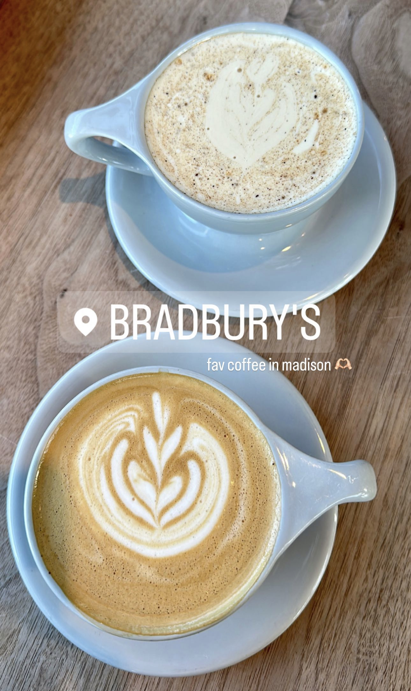
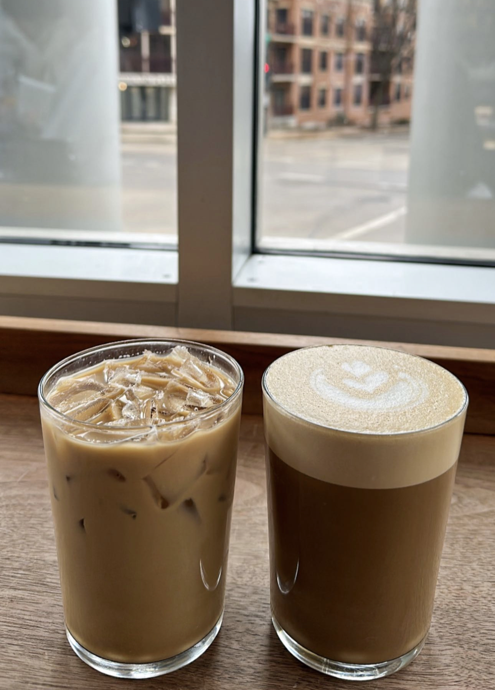
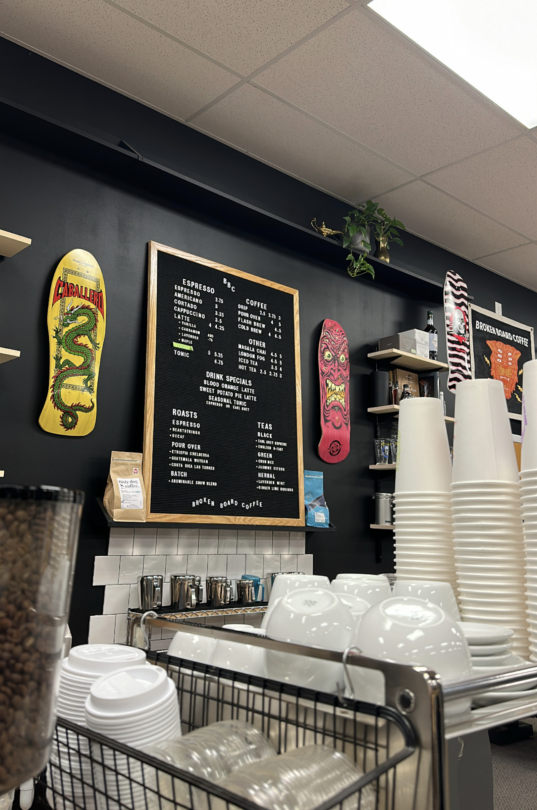
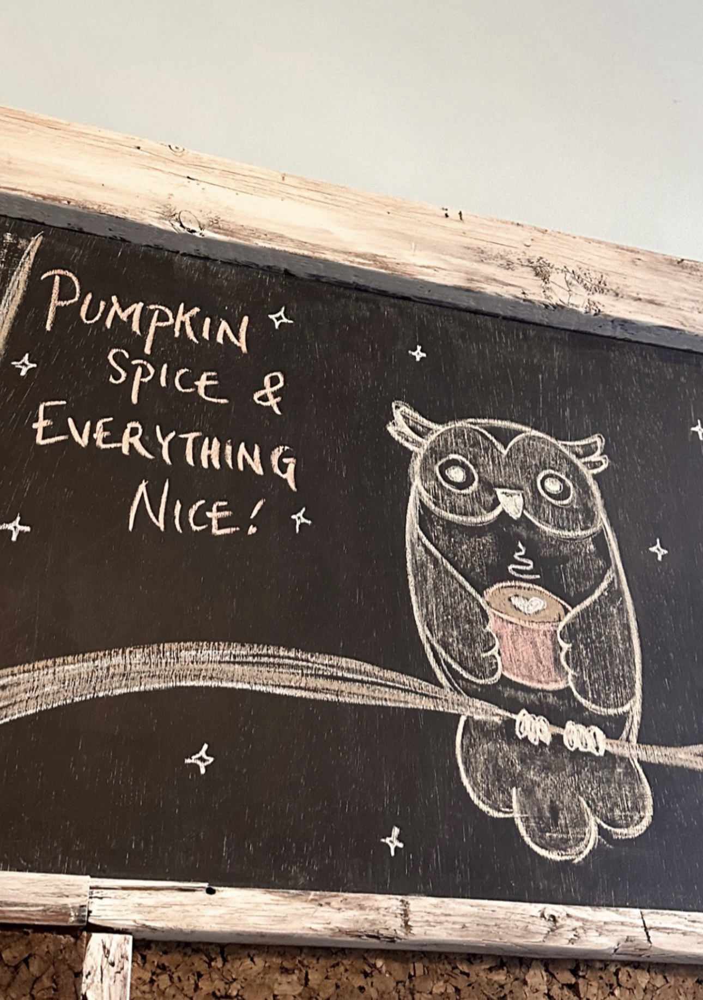

Bradbury's is a cute and cozy cafe that has in-house syrups. I recommend the caramel, vanilla, or maple, all of which are delicious! They also have really good crepes made with buckwheat flour that change seasonally.
 Broken Board Coffee is a hidden gem in my opinion and is located inside a skate/snowboard shop! They have homemade syrups too.
My favorite barista works at Marigold now and they never disappoint with the iced lattes.
